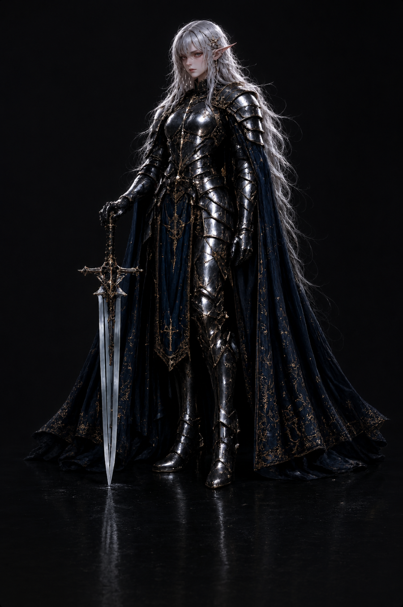
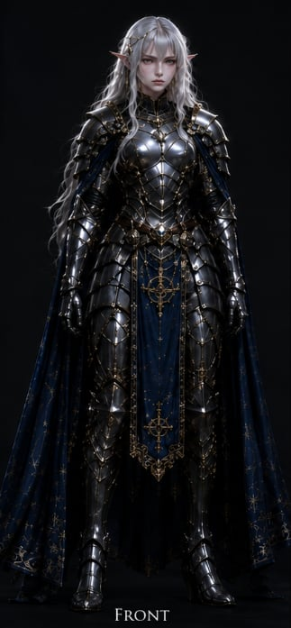
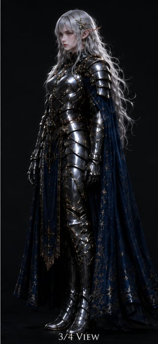
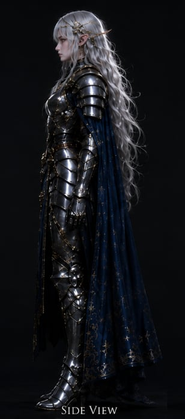
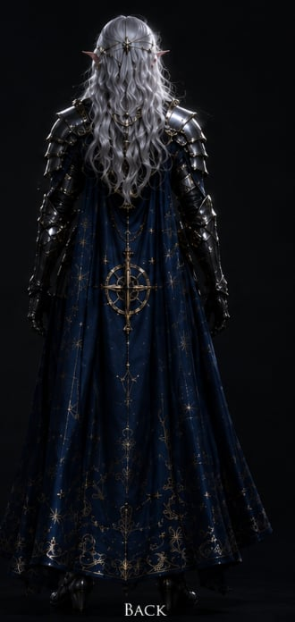

Race
Wood Elf

"Fight the greater evil. Show no mercy to the wicked. By any means."

Front · 01
3/4 · 02
Side · 03
Back · 04Aurora was born and raised in the holy city of Caelthwyn, built high among the mountains in devotion to Helm the Watcher. As a child she was bright, cheerful, and full of faith — a small candle in a city of grey light.
At eighty she was chosen to join the Order of the Veiled Watch. During her long training she was silent and solitary, and so they named her the Ice Queen.
Until she met Kaelen, a fellow paladin — charismatic, resolute, kind. His love melted the ice in her heart. She smiled again. They became the admired pair of the Order, the bright and the brighter.
Then one day a letter from the High Priest summoned her on a final mission to prove her faith. She left Kaelen at the chapel gate. He waved, and she did not look back.
And that — was the beginning of the end.
When justice is denied her by the very church that forged her, the cobalt of her cloak runs to vow-blood and the runes upon her sword learn a darker tongue. She does not lay it down. She becomes it.